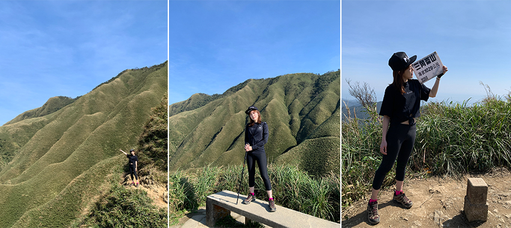
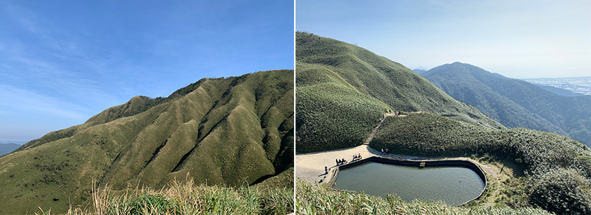
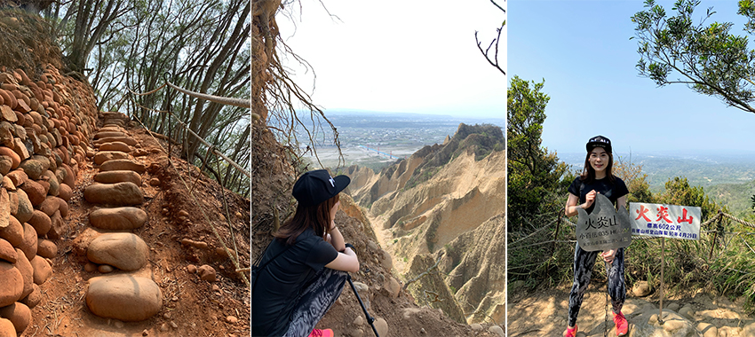
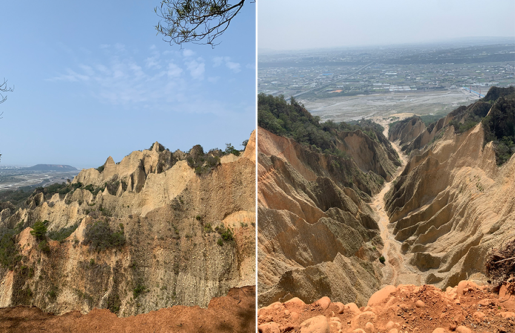

經常可在社群媒體上看見許多網美分享各地的美食及風景照，而這幾年也陸續出現運動型的網美，打卡攻頂各種不同類型的山。原以為網美都能完成的山，應該沒什麼困難度。實際造訪後才知不容小覷，登山前一定要先做好行前須知及備妥登山用品，對大自然保有一切的敬畏。
第一座網美山是近年來爆紅的宜蘭抹茶山，查詢後才得知往返竟要花費6小時，這可不是在信義區逛個街，臨時起意走去象山看夜景那樣簡單！登山裝備有：2公升的水，長途跋涉水分補充是很重要的！可預先查好哪些路段有水源及休息區，評估要帶的水量。輕食：麵包或飯糰等較易保存的糧食、巧克力等，帽子、外套：山頂大多無遮蔽，做好防曬遮陽外，山上風大也可保暖頭部及身體。手套：若時間及體力允許的話，當然要攀登台灣小百岳編號83的三角崙山，但因路線陡峭需拉繩攀爬，建議攜帶手套備用為佳。登山杖：前往抹茶山的路程沿途都是爬坡及階梯，有登山杖的輔助可分攤膝蓋所承受的壓力。
清晨天還沒亮就驅車前往宜蘭礁溪，於07:15抵達五峰旗停車場，沿路上已停滿許多車輛。步行1公里約20分鐘後來到五峰旗聖母朝聖地，這裡有廁所及飲水機可稍作休息並補充水分。之後再走了50分鐘2.8公里、坡度341公尺的產業道路到聖母登山步道，以為迎來的是終點，沒想到才正是起點的開始。
此時通天橋旁的涼亭已有許多遊客在休息乘涼，亦有山友在溪流旁煮食好愜意，因步道全長1.6公里，是屬於線型單向的土木階梯。為避免人潮壅擠，我是一路衝刺超越眾多人群，在1小時內就抵達了終點。然而映入眼簾的是滿滿的人潮，原來熱門景點大家都想一睹為快！連觀景台打卡點也是排著長長隊伍等待獲取美照。
|  |
欣賞完美景後，前往三角崙山登山步道蒐集小百岳，雖說遊客減少了大半，但一路陡峭又需拉繩攀爬，還需經過泥濘路才可登頂，往返花費了將近1個鐘頭。回程途中若還有體力的話，還可去瞧瞧氣勢磅礡的五峰旗瀑布。最後在14:30回到停車場，共計花了7個小時。
|  |
休息三個禮拜，前往第二個位在苗栗三義的網美山－火炎山。亦有台版大峽谷的美稱，是台灣小百岳編號35，標高596公尺。步道是以環狀線O型進出，總長6.4公里，一般大眾腳程約3小時。可上網搜尋火炎山登山停車點，將車停在尖豐路旁，這樣下山就可以免再走去登山口取車。
假日一早已停滿車，步道旁的廁所也排滿了人。在10點前從登山口出發，預計10分鐘就能走到0.3K的南火炎山，但路段大多是泥土路也非常多人，花了45分鐘才抵達。步道幾乎是緩坡難度不高，特別的是鵝卵石階梯，很佩服當初造路的人。
|  |
一路上邊緩慢前進邊讚嘆這奇妙的自然景觀，也發現許多地方被圍上禁止進入，原來有很多人為了拍攝不顧自身安全，火炎山地質土石鬆軟，多處懸崖下方已掏空。當時也遇到前方崩塌的可怕景象，疑似有人拍照太靠近懸崖邊造成，做了最糟糕的示範。火炎山是很適合親子健行的小百岳，又能親眼看到大自然特殊地形景觀，記得要遵守無痕山林，不把垃圾留在山裡。
|  |